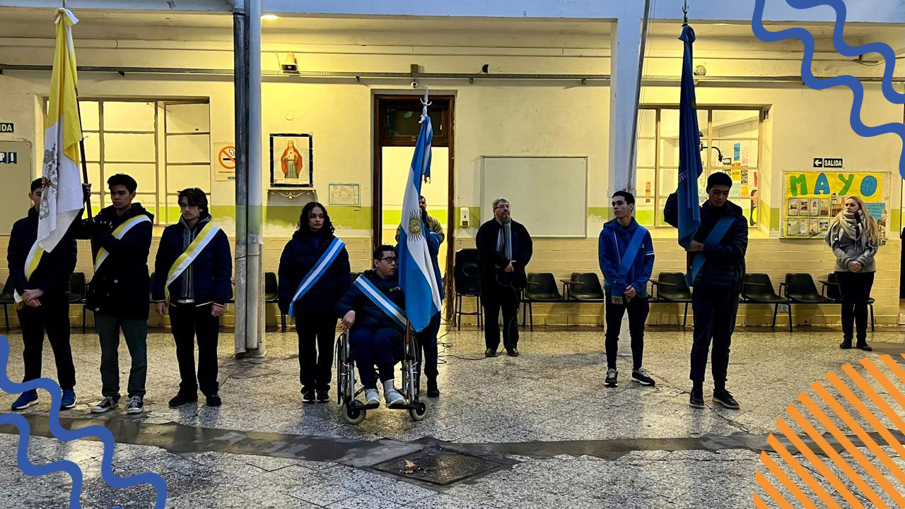

¿Siempre fuimos soberanos de nuestras tierras? ¿Tenemos una limitación sobre nuestra soberanía? Basta con ver el saqueo de nuestros recursos naturales, la presencia de países extranjeros instalados en nuestro territorio o la deuda externa en la que nos encontramos aprisionados. ¿Pero cómo comenzó este sometimiento? La colonización de América Latina dispuso en nuestro continente una política de extractivismo y de dependencia, donde las naciones del norte global dirigen y deciden nuestros destinos económicos, culturales y políticos... Pero ¿qué tiene que ver esto con el 25 de mayo? El primer ímpetu de libertad en las revoluciones latinoamericanas en 1810 fueron efecto de las catástrofes políticas europeas: el avance napoleónico sobre la corona Española y la fidelidad a Fernando VII, quien se encontraba prisionero, llevó a que los pueblos españoles y latinoamericanos se reorganicen políticamente, experimentando en acciones y sentimientos el fervor de un nuevo margen soberano. En el Río de La Plata, el proceso revolucionario de 1810 se topó con un marco de acción de las clases bajas, quienes protagonizaron la defensa territorial de la Ciudad de Bs. As. ante las Invasiones Inglesas. Los esclavos, los zambos, y el grueso la casta colonial (tan ridículamente actuada en la conmemoración de esta fecha) se encolumnaron a los objetivos de la elite letrada porteña. Poco a poco, se abrió paso al proceso emancipatorio. La crisis de la corona española, el liberalismo importado de Francia e Inglaterra y la exigencia de las elites por un mayor margen de acción económica se arraigó el seno de la sociedad virreinal. Los protagonistas de la Revolución de 1810 exigían un nuevo marco de representatividad política, económica y judicial: se toparon con la urgencia de pensar instituciones pensadas y sentidas por las necesidades de las Provincias del Río de la Plata. Entendieron que para ser libres debían estar arraigados cultural y legalmente al suelo en que pisan. Que las recetas políticas y económicas del extranjero sólo sirven para favorecer a los de afuera. La revolución del 25 de mayo de 1810 es mucho más que los versitos de las empanadas calientes, el aguatero y los vestidos de dama antigua. Es la revaloración de un nuevo tipo de ciudadanía, que incluye y visibiliza la presencia del bajo pueblo, que junto a la elite bonaerense sentaron las bases para la reconfiguración soberana, la cual se topó con guerras, invasiones e intenciones británicas, francesas e incluso disputas internas que buscaron intencionalmente limitarla. Ahora: ¿Tenemos una limitación soberana? Basta con ver el contexto actual y compararlo con la herencia revolucionaria para poder responder esta pregunta.
